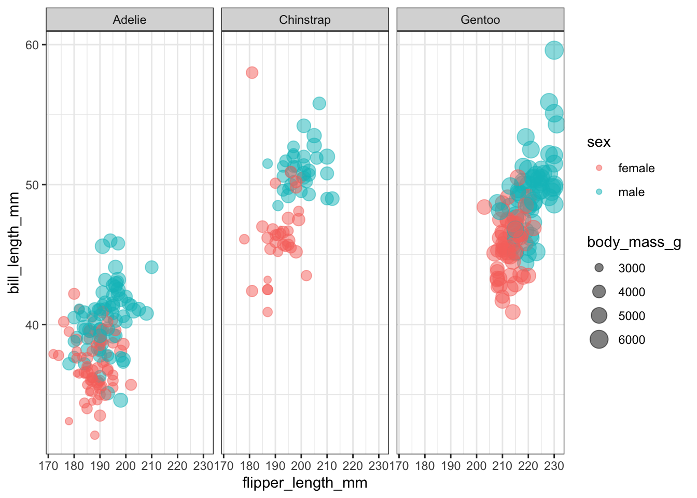
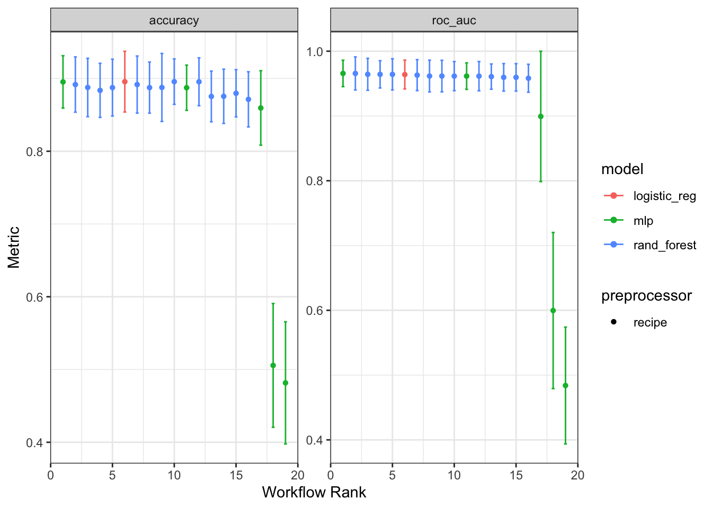
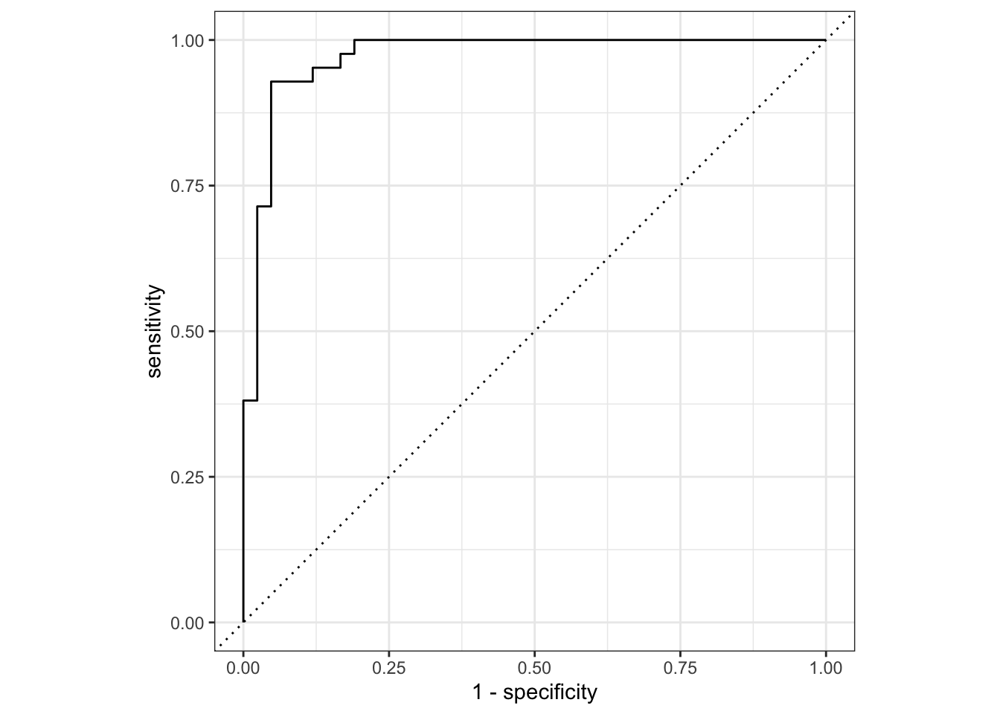
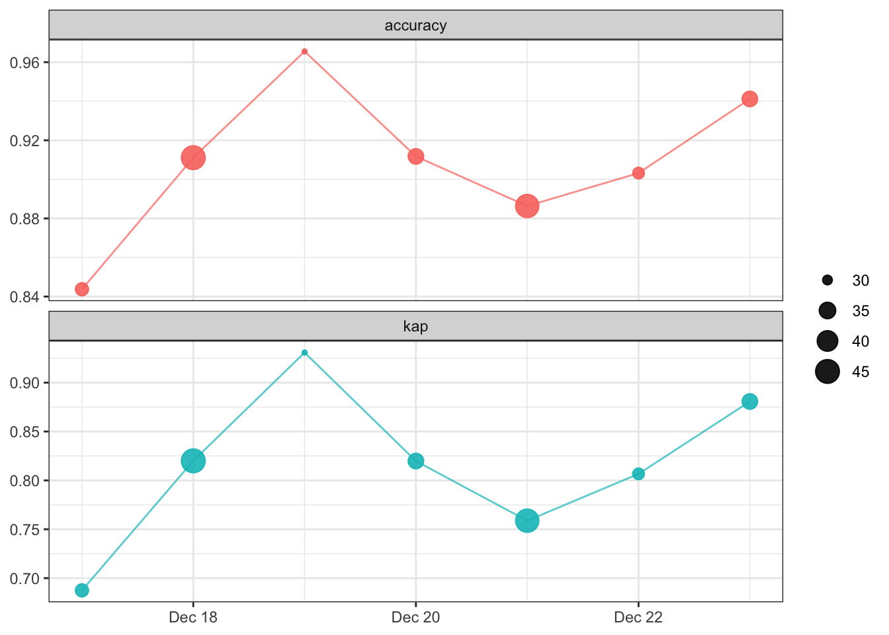
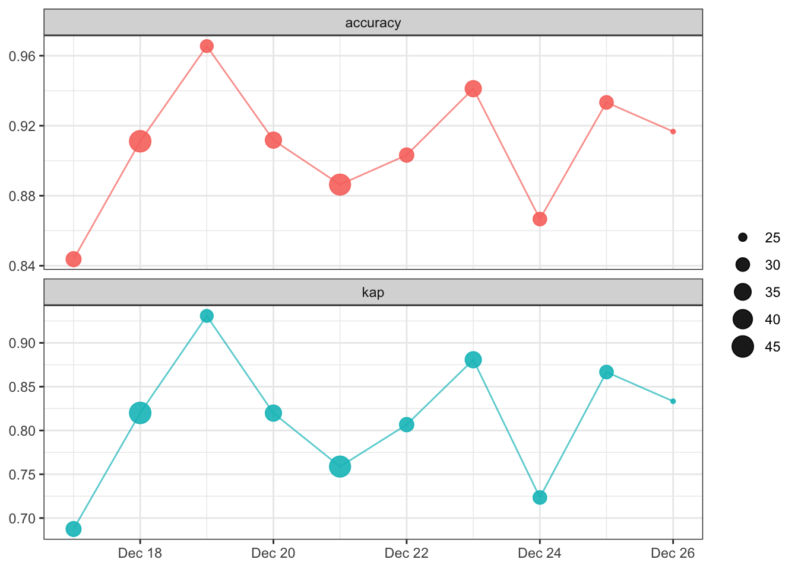

library(tidyverse)
library(tidymodels)
library(pins)
library(vetiver)
library(plumber)
library(palmerpenguins)
library(gt)
library(conflicted)
tidymodels_prefer()
conflict_prefer("penguins", "palmerpenguins")
theme_set(theme_bw())
options(tidymodels.dark = TRUE)If we actually know what we’re doing we call it engineering. So, this basket of pain, we call something ops.
Peter Wang, Numerically Speaking Podcast with Vicky Boykis on ML & MLOps
MLOps can be overwhelming, but that is not the way it has to be. Posit’s MLOps team has made from fantastic advancements over the past year or so, and I hope to show how to demonstrate how easy model deployment can be using Posit’s open source tools for MLOps. This includes {pins}, {vetiver}, and the {tidymodels} bundle of packages along with the {tidyverse}. The motivation for this post came in part from a Numerically Speaking podcast I quote above, and much of the model building is taken from Julia Silge’s blog post written to help R users get started with tidymodels. I also found inspiration from the {vetiver} documentation page and the recently revamped Solutions Engineering Page from Posit.
The post covers most of steps in MLOps process, but it’s more of a sampler than exhaustive coverage. Think of this as the “whole game” of MLOps with R.

Model Building
Load Packages and Set Options
Let’s start with the packages that we’ll use throughout. {tidyverse} and {tidymodels} are there, of course. {pins}, {plumbr}, and {vetiver} completes the rest of the Posit set for MLOps, and I use {gt} for tables.
Data Exploration
For this example, we’ll use the palmerpenguins dataset to demonstrate the overall approach. There is a {palmerpenguins} package that contains this data set, and it is also included in the {modeldata} package, a part of {tidymodels}. We’ll use the data from {palmerpenguins}.
Code
penguins |>
head(4) |>
glimpse()Rows: 4
Columns: 8
$ species <fct> Adelie, Adelie, Adelie, Adelie
$ island <fct> Torgersen, Torgersen, Torgersen, Torgersen
$ bill_length_mm <dbl> 39.1, 39.5, 40.3, NA
$ bill_depth_mm <dbl> 18.7, 17.4, 18.0, NA
$ flipper_length_mm <int> 181, 186, 195, NA
$ body_mass_g <int> 3750, 3800, 3250, NA
$ sex <fct> male, female, female, NA
$ year <int> 2007, 2007, 2007, 2007As Julia’s post points out, differentiating the species with a classification model is quite easy. A trickier model is one that predicts the penguin sex. Let’s look at a plot of flipper_length_mm versus bill_length_mm for each of the species. The color indicates sex and the point size indicates body_mass_g.
Code
penguins %>%
filter(!is.na(sex)) %>%
ggplot(aes(
x = flipper_length_mm,
y = bill_length_mm,
color = sex,
size = body_mass_g
)) +
geom_point(alpha = 0.5) +
facet_wrap(~species)
Model Splitting & Bootstrapping
Let’s do a little data cleaning before we move onto modeling. This will include removing any missing sex assignments and removing year and island columns.
penguins_df <-
penguins |>
drop_na(sex) |>
select(-year, -island)The {tidymodels} ecosystem has convenience functions for data splitting that help us do the “right” thing during model building. The default split between training and testing set is 75:25.
set.seed(1234)
penguin_split <- initial_split(penguins_df, strata = sex)
penguin_train <- training(penguin_split)
penguin_test <- testing(penguin_split)Preprocess with {recipes}
For preprocessing of the data, let’s use {recipes}.
penguin_rec <-
recipe(sex ~ ., data = penguin_train) |>
step_YeoJohnson(all_numeric_predictors()) |>
step_normalize(all_numeric_predictors()) |>
step_dummy(species)The penguin_rec recipe is a process for preparing data for modeling. It consists of four steps:
The
recipe()function creates a recipe object, which is a sequence of steps for preprocessing data. The first argument to the function specifies the outcome variable (sex) and the predictor variables (., which stands for all variables in the data). Thedataargument specifies the data frame to use for the recipe.The
step_YeoJohnson()function applies a Yeo-Johnson transformation to all numeric predictors in the data. This transformation is a type of power transformation that can help normalize data by making it more symmetric and reducing the influence of outliers.The
step_normalize()function normalizes all numeric predictors in the data. Normalization scales the data so that it has a mean of 0 and a standard deviation of 1.The
step_dummy()function creates dummy variables for thespeciesvariable. Dummy variables are binary variables that are used to represent categorical variables in a regression model.
Overall, this recipe applies several preprocessing steps to the data in order to prepare it for modeling. The transformed and normalized data, along with the dummy variables, can then be used to build a predictive model.
Specify the Model
We’ll evaluate three modeling approaches. In the code below, glm_spec, tree_spec, and mlp_brulee_spec are specifications for three different machine learning models: a logistic regression model, a random forest model, and a multi-layer perceptron (MLP) model. The intent with model selection was to demonstrate the use of very different models rather than pick an ideal set of models to screen.
The logistic_reg() function creates a specification for a logistic regression model, and the set_engine('glm') function sets the engine for the model to be 'glm', which stands for generalized linear model.
The rand_forest() function creates a specification for a random forest model, and the set_engine('ranger') function sets the engine for the model to be 'ranger', which is an implementation of random forests using the {ranger} package. The set_mode('classification') function sets the mode of the model to be classification. set_mode() is not needed for logistic regression as that model is only used for classification. (Yes, the name is a bad one for what it does.)
The mlp() function creates a specification for an MLP model, and the set_engine('brulee') function sets the engine for the model to be 'brulee', which uses {torch} to specify and fit the neural network. The tune() function indicates that the hyperparameters for the model (hidden_units, epochs, penalty, and learn_rate) should be tuned.
glm_spec <-
logistic_reg() |>
set_engine("glm")
tree_spec <-
rand_forest(min_n = tune()) |>
set_engine("ranger") |>
set_mode("classification")
mlp_brulee_spec <-
mlp(
hidden_units = tune(), epochs = tune(),
penalty = tune(), learn_rate = tune()
) %>%
set_engine("brulee") %>%
set_mode("classification")Create the Workflow Set and Fit Models
Before we fit the models specified above, let’s use cross validation for more robust model evaluation and set the parameters for hyperparameter tuning.
The set.seed() function sets the seed for the random number generator, which is helps improve the reproducibility of the code.
The vfold_cv() function creates a v-fold cross-validation object, which is used to evaluate the performance of a model on different subsets of the data. The penguin_folds object stores the folds that will be used for cross-validation.
The control_bayes() creates an object to store the settings for Bayesian optimization. Bayesian optimization is a method for finding the optimal set of hyperparameters for a machine learning model. The no_improve argument specifies the number of consecutive iterations with no improvement in the objective function before the optimization process is terminated. The time_limit argument specifies the maximum amount of time that the optimization process can run in minutes. The save_pred argument specifies whether to save the predictions made during the optimization process.
set.seed(1234)
penguin_folds <- vfold_cv(penguin_train)
bayes_control <-
control_bayes(no_improve = 10L, time_limit = 20, save_pred = TRUE)A workflow set combines the recipes and models to fit to our training data. The {workflowsets} package is an extension of the {workflow} package that allows us to evaluate multiple preprocessing and modeling approaches all together. The workflow_set() function creates a workflow set object, which consists of a list of preprocessing recipes in the preproc argument and a list of modeling specifications in the models argument.
The workflow_map() function applies a function to each element of the workflow set. In this case, we use the tune_bayes function, which performs Bayesian optimization using the {tune} package. The iter argument specifies the maximum number of iterations for each model, the resamples argument specifies the cross-validation folds to use, and the control argument specifies the settings for Bayesian optimization that we defined above.
Overall, this code creates a workflow set consisting of three models (a logistic regression model, a random forest model, and an MLP model) with preprocessing steps applied to the data, and then performs Bayesian optimization to tune the hyperparameters of the models using cross-validation.1
workflow_set <-
workflow_set(
preproc = list(penguin_rec),
models = list(
glm = glm_spec,
tree = tree_spec,
torch = mlp_brulee_spec
)
) |>
workflow_map("tune_bayes",
iter = 50L,
resamples = penguin_folds,
control = bayes_control
)We can now use rank_results() to rank the models in the workflow set based on their performance based on our specified metrics - the area under the receiver operating characteristic curve (ROC AUC). ROC AUC is a measure of a model’s ability to distinguish between positive and negative classes. A higher ROC AUC indicates a better-performing model with a maximum value of 1. Using the rank table, we can select the workflow ID for the best performing model.
Throughout many tidymodels packages, autoplot is a handy method to rapidly visualize steps in a model workflow. These methods are specified by the package authors, and some autoplot methods have some options to customize the output. These are ggplot objects, so customize their appearance is easy.
rank_results(workflow_set,
rank_metric = "roc_auc",
select_best = TRUE
) |>
gt()| wflow_id | .config | .metric | mean | std_err | n | preprocessor | model | rank |
|---|---|---|---|---|---|---|---|---|
| recipe_torch | Preprocessor1_Model3 | accuracy | 0.8953333 | 0.02186491 | 10 | recipe | mlp | 1 |
| recipe_torch | Preprocessor1_Model3 | roc_auc | 0.9656795 | 0.01237363 | 10 | recipe | mlp | 1 |
| recipe_tree | Preprocessor1_Model4 | accuracy | 0.8916667 | 0.02309000 | 10 | recipe | rand_forest | 2 |
| recipe_tree | Preprocessor1_Model4 | roc_auc | 0.9656541 | 0.01552447 | 10 | recipe | rand_forest | 2 |
| recipe_glm | Preprocessor1_Model1 | accuracy | 0.8956667 | 0.02540560 | 10 | recipe | logistic_reg | 3 |
| recipe_glm | Preprocessor1_Model1 | roc_auc | 0.9639505 | 0.01352438 | 10 | recipe | logistic_reg | 3 |
workflow_set |> autoplot()
In this case autoplot() compare the results from each of our workflows showing both accuracy and roc_auc. Logistic regression appears to be the best model based on these metrics given its comparable performance and lower model complexity.
best_model_id <- "recipe_glm"Finalize Model
Now that we have compared our models and identified the top performing one based on roc_auc, we can finalize the workflow and fit the model will the full dataset (i.e., not just training data).
In the code below, the best_fit object is extract the best model from the workflow using the workflow ID we selected above. This is done with workflowsets::extract_workflow_set_result() and tune::select_best() to give us best_fit, a tibble of hyperparameters for the best fit model.
We can then use finalize_workflow() to take the hyperparameters from best_fit and apply it to the final_workflow object. We can then update the fit of the model to use the entire training set instead of folds and evaluate the model on the test set.
The collect_metrics() and collect_performance() functions are convenience functions to to check model performance. We can again use autoplot() to visualize model results, in this case ROC curves.
best_fit <-
workflow_set |>
extract_workflow_set_result(best_model_id) |>
select_best(metric = "accuracy")
final_workflow <-
workflow_set |>
extract_workflow(best_model_id) |>
finalize_workflow(best_fit)
final_fit <-
final_workflow |>
last_fit(penguin_split)
final_fit |>
collect_metrics() |>
gt()| .metric | .estimator | .estimate | .config |
|---|---|---|---|
| accuracy | binary | 0.9047619 | Preprocessor1_Model1 |
| roc_auc | binary | 0.9705215 | Preprocessor1_Model1 |
final_fit |>
collect_predictions() |>
roc_curve(sex, .pred_female) |>
autoplot()
Model Deployment
The {vetiver} package provides a set of tools for building, deploying, and managing machine learning models in production. It allows users to easily create, version, and deploy machine learning models to various hosting platforms, such as Posit Connect or a cloud hosting service like Azure.
The vetiver_model() function is used to create an object that stores a machine learning model and its associated metadata, such as the model’s name, type, and parameters. vetiver_pin_write() and vetiver_pin_read() functions are used to write and read vetiver_model objects to and from a server.
Create Vetiver Model
To deploy our model with {vetiver}, we start with our final_fit from above, we first need to extract the trained workflow. We can do that with tune::extract_workflow(). The trained workflow is what we will deploy as a vetiver_model. That means we need to convert it from a workflow to a vetiver model with vetiver_model().
final_fit_to_deploy <- final_fit |> extract_workflow()
v <- vetiver_model(final_fit_to_deploy, model_name = "penguins_model")
v
── penguins_model ─ <bundled_workflow> model for deployment
A glm classification modeling workflow using 5 featuresPin Model to Board
The {pins} package is used for storing and managing data sets in a local or remote repository. {pins} allows users to “pin” data sets to a “board”, allowing them to be easily accessed and shared with others. Using the pins package, users can create a board, add data sets, and access and retrieve data sets from the board. The board_rsconnect() function is used to create a model_board or connect to an existing board on Posit Connect (formerly RStudio Connect), which is a connection to a server where a vetiver_model can be stored and accessed. We also specify versioned = TRUE so that we can version control our vetiver models.
Once the model_board connection is made it’s as easy as vetiver_pin_write() to “pin” our model to the model board and vetiver_pin_read() to access it. In this case, we must specify the username of the author of the pin, which in this case is james.
model_board <- board_local(versioned = TRUE)
model_board |> vetiver_pin_write(v)Creating new version '20221228T000205Z-9c561'
Writing to pin 'penguins_model'
Create a Model Card for your published model
• Model Cards provide a framework for transparent, responsible reporting
• Use the vetiver `.Rmd` template as a place to startmodel_board |> vetiver_pin_read("penguins_model")
── penguins_model ─ <bundled_workflow> model for deployment
A glm classification modeling workflow using 5 featuresmodel_board <- board_rsconnect(versioned = TRUE)
model_board |> vetiver_pin_write(v)
model_board |> vetiver_pin_read("penguins_model")Create Model API
Our next step is to use {vetiver} and {plumber} packages to create an API for our vetiver model, which can then be accessed and used to make predictions or perform other tasks via an HTTP request. pr() creates a new plumber router, and vetiver_api(v) adds a POST endpoint to make endpoints from a trained vetiver model. vetiver_write_plumber() creates a plumber.R file that specifies the model version of the model we pinned to our model dashboard with vetiver_pin_write().
pr() |>
vetiver_api(v)# Plumber router with 2 endpoints, 4 filters, and 1 sub-router.
# Use `pr_run()` on this object to start the API.
├──[queryString]
├──[body]
├──[cookieParser]
├──[sharedSecret]
├──/logo
│ │ # Plumber static router serving from directory: /Library/Frameworks/R.framework/Versions/4.2/Resources/library/vetiver
├──/ping (GET)
└──/predict (POST)vetiver_write_plumber(model_board, "penguins_model")Here is an example of the plumber.R file generated by vetiver_write_pumber().
# Generated by the vetiver package; edit with care
library(pins)
library(plumber)
library(rapidoc)
library(vetiver)
# Packages needed to generate model predictions
if (FALSE) {
library(parsnip)
library(recipes)
library(stats)
library(workflows)
}
b <- board_rsconnect("envvar", server = "https://connect.mycompany.com")
v <- vetiver_pin_read(b, "penguins_model", version = "6926")
#* @plumber
function(pr) {
pr %>% vetiver_api(v)
}Deploy API to Posit Connect
This model can be hosted in a variety of locations. One of the easiest to use is Posit Connect. vetiver_deploy_rsconnect() does that for us. All we need to specify is the name of the pinned vetiver model and the model board.
vetiver_deploy_rsconnect(
board = model_board,
name = "penguins_model",
account = "james"
)Deploying Elsewhere
If Posit Connect is not the right place for our model, vetiver_write_docker creates a dockerfile and renv.lock.
vetiver_write_docker(v)Here is an example of the dockerfile that is generated.
# Generated by the vetiver package; edit with care
FROM rocker/r-ver:4.2.1
ENV RENV_CONFIG_REPOS_OVERRIDE https://packagemanager.rstudio.com/cran/latest
RUN apt-get update -qq && apt-get install -y --no-install-recommends \
libcurl4-openssl-dev \
libicu-dev \
libsodium-dev \
libssl-dev \
make \
zlib1g-dev \
&& apt-get clean
COPY vetiver_renv.lock renv.lock
RUN Rscript -e "install.packages('renv')"
RUN Rscript -e "renv::restore()"
COPY plumber.R /opt/ml/plumber.R
EXPOSE 8000
ENTRYPOINT ["R", "-e", "pr <- plumber::plumb('/opt/ml/plumber.R'); pr$run(host = '0.0.0.0', port = 8000)"]Using the API to Make Predictions
The api deployment site url https://connect.mycompany.com/penguins, and the prediction endpoint is https://connect.mycompany.com/penguins/predict.
endpoint <-
vetiver_endpoint("https://connect.mycompany.com/penguins/predict")We can make endpoints with the endpoint using predict.
new_data <- tibble(
species = "Adelie",
bill_length_mm = 40.5,
bill_depth_mm = 18.9,
flipper_length_mm = 180,
body_mass_g = 3950
)
predict(endpoint, new_data)We can also use {httr} to call the API. In most cases, it is easier for R users to use predict rather than httr::POST. However, were this model written in another language, making predictions using {httr} would likely bet the best approach.
library(httr)
url <- "https://connect.mycompany.com/penguins/predict"
json_data <- jsonlite::toJSON(new_data)
response <- POST(url, body = json_data)
response
content(response)Avoiding a language-specific approach altogether, we can use curl in a terminal to make API calls.
Terminal
#| file
curl -X POST "https://connect.mycompany.com/penguins/predict" \
-H "Accept: application/json" \
-H "Content-Type: application/json" \
-d '[{"species":"Adelie","bill_length_mm":0.5,"bill_depth_mm":0.5,"flipper_length_mm":0,"body_mass_g":0}]' \Model Monitoring
After deployment, we need to monitor model performance. The MLOps with vetiver monitoring page describes this well:
Machine learning can break quietly; a model can continue returning predictions without error, even if it is performing poorly. Often these quiet performance problems are discussed as types of model drift; data drift can occur when the statistical distribution of an input feature changes, or concept drift occurs when there is change in the relationship between the input features and the outcome.
Without monitoring for degradation, this silent failure can continue undiagnosed. The vetiver framework offers functions to fluently compute, store, and plot model metrics. These functions are particularly suited to monitoring your model using multiple performance metrics over time. Effective model monitoring is not “one size fits all”, but instead depends on choosing appropriate metrics and time aggregation for a given application.
As a baseline for model performance, we can start by using our training set to create original metrics for the model. We also simulate a date_obs column. In a real example, we should use the date the data was collected.
set.seed(1234)
penguin_train_by_date <-
penguin_train |>
rowwise() |>
mutate(date_obs = Sys.Date() - sample(4:10, 1)) |>
ungroup() |>
arrange(date_obs)
original_metrics <-
augment(v, penguin_train_by_date) |>
vetiver_compute_metrics(
date_var = date_obs,
period = "day",
truth = "sex",
estimate = ".pred_class"
)
vetiver_plot_metrics(original_metrics)
We can pin the model performance metrics, just as we did with the model.
model_board %>%
pin_write(original_metrics, "penguin_metrics")Guessing `type = 'rds'`
Creating new version '20221228T000206Z-3e18d'
Writing to pin 'penguin_metrics'To simulate the model going “live”, let’s use the test set to add more predictions.
set.seed(1234)
penguin_test_by_date <-
penguin_test |>
rowwise() |>
mutate(date_obs = Sys.Date() - sample(1:3, 1)) |>
ungroup() |>
arrange(date_obs)
v <-
model_board |>
vetiver_pin_read("penguins_model")
new_metrics <-
augment(v, penguin_test_by_date) |>
vetiver_compute_metrics(
date_var = date_obs,
period = "day",
truth = "sex",
estimate = ".pred_class"
)
model_board |>
vetiver_pin_metrics(new_metrics, "penguin_metrics")Creating new version '20221228T000206Z-7c132'
Writing to pin 'penguin_metrics'# A tibble: 20 × 5
.index .n .metric .estimator .estimate
<date> <int> <chr> <chr> <dbl>
1 2022-12-17 32 accuracy binary 0.844
2 2022-12-17 32 kap binary 0.688
3 2022-12-18 45 accuracy binary 0.911
4 2022-12-18 45 kap binary 0.82
5 2022-12-19 29 accuracy binary 0.966
6 2022-12-19 29 kap binary 0.931
7 2022-12-20 34 accuracy binary 0.912
8 2022-12-20 34 kap binary 0.820
9 2022-12-21 44 accuracy binary 0.886
10 2022-12-21 44 kap binary 0.759
11 2022-12-22 31 accuracy binary 0.903
12 2022-12-22 31 kap binary 0.807
13 2022-12-23 34 accuracy binary 0.941
14 2022-12-23 34 kap binary 0.881
15 2022-12-24 30 accuracy binary 0.867
16 2022-12-24 30 kap binary 0.724
17 2022-12-25 30 accuracy binary 0.933
18 2022-12-25 30 kap binary 0.867
19 2022-12-26 24 accuracy binary 0.917
20 2022-12-26 24 kap binary 0.833Now that we’ve updated the model metrics, we can plot model performance over time , again using the vetiver_plot_metrics() function.
monitoring_metrics <-
model_board |> pin_read("penguin_metrics")
vetiver_plot_metrics(monitoring_metrics)
Footnotes
For ease of compute, I don’t actually re-calculate the workflow_set in this document. There’s a hidden chunk that reads a pinned version of the workflow_set result. For the curious, that’s
model_board <- board_local()andworkflow_set <- mode_board |> pin_read("workflow_set").↩︎